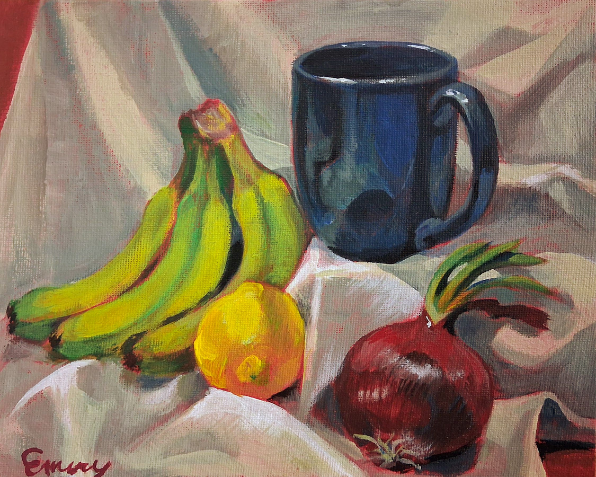
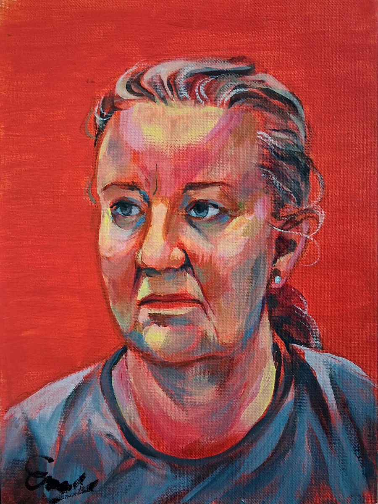
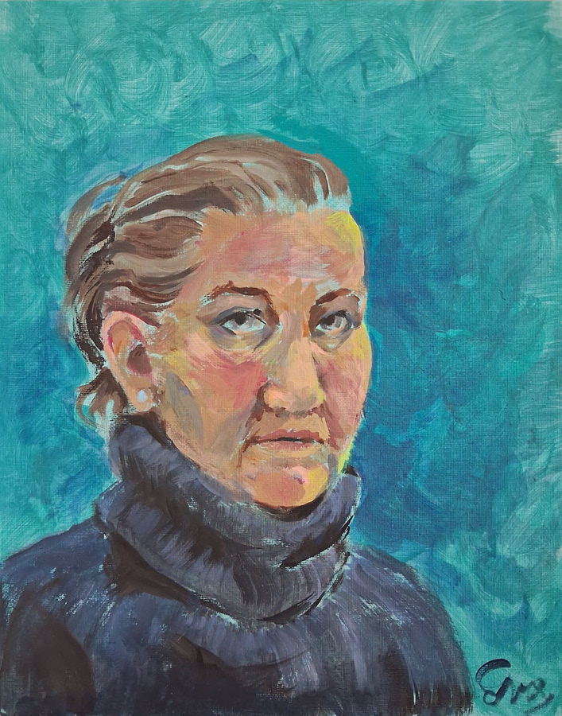

Painting Diary
I recently started painting for the first time since I was a kid.
Thought I would track my progress here as a way to stay motivated!
Currently aiming to do a session weekly.
2026/05/12

Acrylic on canvas board
3 hours
2026/05/04

Acrylic on canvas board
2 hours
Same subject, but was more careful with the sketch! Much better likeness and proportions. Enjoyed working over the bright red wash, and doing the t-shirt fabric.
2026/04/25

Acrylic on canvas board
1.5 hours
Went to a library event where you and someone else try to paint each other! Had a lot of fun, but wasn't satisfied with the proportions (the nose especially) or the placement of the figure on the canvas.
I thought still life would be easier than portraits but it really wasn't. Went a full hour overtime. I really like how the mug looks though!